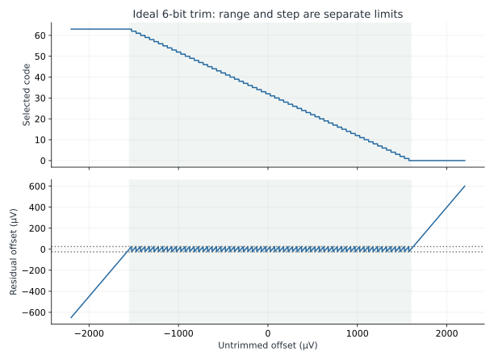
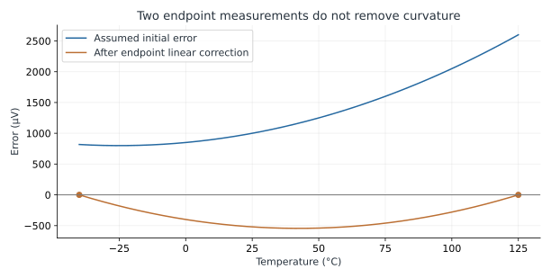

Calibration, Trimming & Testability
Turn imperfect analog behavior into a bounded, observable, reproducible correction.
- Separate trim resolution, trim range, calibration accuracy, and drift.
- Derive one-point and two-point corrections and identify errors they cannot remove.
- Design an atomic trim-update and readiness contract across analog and digital logic.
- Plan observability, test time, and reproducible calibration records.
1. Calibration is a measured correction
A reference can have a small initial offset and large temperature drift. An ADC can be monotonic yet have gain error. An amplifier can be calibrated at one common-mode voltage and develop another error elsewhere. Calibration measures a defined behavior under defined conditions and applies a correction. It does not establish all other conditions automatically.
This distinction links three disciplines. Analog design determines which error terms exist and which knobs can change them. Digital design transports, stores, and applies the selected codes coherently. Physical design affects matching, parasitic resistance, coupling, and temperature gradients that can move the optimum code after layout or packaging. A calibration procedure is part of the system design, with its own interface and uncertainty budget.
The numerical examples here use assumed ideal trim steps and synthetic data. They are reproducible calculations, not measured SKY130 mismatch or production yield. SKY130 supplies device and resistor options that a designer can use to implement a trim network, but an available resistor model does not provide a ready-made, qualified trim macro or nonvolatile memory.
| Concept | Question | Typical mistake |
|---|---|---|
| Resolution | How small is one correction step? | Claiming one-step precision without a noise or monotonicity check |
| Range | Can the extreme errors be corrected? | Adding bits while leaving insufficient endpoint range |
| Accuracy | How close is the corrected result to the true quantity? | Using an uncertain calibration source as exact truth |
| Repeatability | Does the same condition produce the same result? | Treating repeatable offset as random noise |
| Drift | How does the correction change with time, temperature, supply, or stress? | Assuming room-temperature calibration covers all operating conditions |
2. A six-bit trim example with exact units
Assume codes c=0…63, neutral code 32, and an ideal output correction ΔV(c)=(c−32)×50 µV. The available correction is −1600 to +1550 µV. Because there are 64 codes, centering on code 32 leaves one extra negative step. The offsets covered by this correction range run from −1550 to +1600 µV; note the reversed signs. Exact cancellation occurs only at the 64 offsets matching a discrete trim correction; the intervening offsets retain quantization residual.
For a measured positive offset of 1260 µV, the nearest code is 7. Its correction is (7−32)×50=−1250 µV, leaving +10 µV. Within the stated correction range, an ideal nearest-code algorithm leaves at most 25 µV of quantization residual. This half-step bound assumes correct measurement, monotonic equally spaced steps, no subsequent drift, and no clipping. It is not a guarantee for a real trim circuit.

For a +2200 µV offset, code zero supplies only −1600 µV, leaving +600 µV. More measurement averaging cannot fix this missing range. Conversely, doubling the range with the same six-bit code count makes the steps coarser. Choose range from supported process/statistical analysis and system tolerance; choose step from the residual-error allocation. Both must include uncertainty and implementation margin.
Real switches add resistance and capacitance. A binary-weighted network can have a large transition when several bits change, and mismatch can disturb step size or monotonicity. A thermometer or segmented code can improve some transition properties but costs devices, wires, and decoding. A correct arithmetic code in a digital register therefore does not establish the analog transfer function.
3. One-point and two-point calibration
One-point offset calibration measures error at one known input and subtracts a constant. It is useful when offset dominates and gain is already sufficiently controlled. Two-point calibration fits an affine relationship. If known voltages V1 and V2 produce raw codes C1 and C2, estimate voltage from a later raw code C by:
Use V1=0.2 V, V2=1.6 V, C1=470, and C2=3660. The fitted slope is 0.438871 mV/code. A later code 2065 maps to 0.900000 V. The two calibration points are deliberately away from the rails, where saturation or driver headroom can corrupt a fit. These are hypothetical measurements of a nominal 12-bit, 1.8 V-span system.
| Measured behavior | Can a constant offset remove it? | Can an affine two-point fit remove it? |
|---|---|---|
| Constant offset | Yes, within measurement and trim limits | Yes |
| Constant gain error | No | Yes, over the fitted linear model |
| Integral nonlinearity | No | No; residual curvature remains |
| Random noise | No | No; averaging can improve parameter estimates |
| Signal-dependent settling | Only coincidentally at the calibrated condition | No general guarantee |
| Temperature or aging change after calibration | Only if unchanged | Only if the fitted relationship remains valid |
The fitted slope also scales subsequent noise and quantization uncertainty. Two noisy endpoints produce uncertain gain and offset estimates, often with correlation. Choose sufficiently separated calibration inputs and use their actual uncertainty. A larger separation improves slope estimation in a linear region, but moving too close to the rails may introduce a different error. Verify additional points between and beyond the fit points within the supported operating range.
4. Temperature calibration is a different axis
Calibrating output against two input voltages is not the same experiment as calibrating a reference at two temperatures. The first estimates an input/output relationship; the second estimates temperature dependence. A reference can need independent trim of initial value and temperature slope, with residual curvature after both adjustments.
Consider the assumed error e(T)=1000+8(T−25)+0.08(T−25)² µV, with T in °C. Subtract the straight line through its values at −40 °C and +125 °C. The corrected endpoints are zero, but the remaining curvature reaches −544.5 µV at 42.5 °C. For a nominal 1.2 V reference, the corresponding box metric over this 165 °C span is 2.75 ppm/°C. That metric uses the total maximum-to-minimum excursion; it is not the local derivative at every temperature.

When using process models, first confirm the supported temperature and terminal-voltage ranges for the exact devices. An application may require −55 °C, +27 °C, and +125 °C measurements, but those requirements do not extend a model's validated range. A temperature point needs a physical dwell condition too: chamber air, package surface, and on-die junction temperature need not match immediately.
5. Two trim knobs can interact
Suppose an initial-value code also changes temperature slope because it changes bias current. A second slope code may shift the room-temperature value. Model small changes around a chosen operating point with a sensitivity matrix. For illustration:
For errors +1260 µV and +12 µV/°C, the continuous solution is approximately ΔcodeA=−24.8485 and ΔcodeB=−3.5152. Rounding to −25 and −4 leaves −10 µV offset and −1 µV/°C slope in this local linear model. Starting both codes at 32 gives legal final codes 7 and 28. The residual follows from applying both columns, not from trimming the two metrics independently.
Measure this sensitivity at several relevant conditions. If the columns are nearly proportional, the knobs cannot independently control the desired errors; inversion becomes sensitive to measurement noise. Large code moves can also invalidate a local linear approximation. An iterative search with bounds and final verification is often more useful than one unconstrained matrix inversion.
6. Make trim updates electrically safe and logically coherent
A multi-bit bus changing from 31 to 32 may momentarily present several intermediate words. Independent synchronizers on each bit do not make the word atomic. Use a held mailbox or shadow register, a coherent request/acknowledge transfer, and a commit point that the analog block can tolerate. Lab 5 implements the digital part of this contract.
| Interface item | Required definition |
|---|---|
| Reset code | Which legal code is applied before stored trim is available? |
| Commit | When is the new word allowed to affect switches? |
| Sample inhibit | Which conversions are blocked or discarded during the change? |
| Settling / ready | What analog error band and qualification interval make ready true? |
| Readback | Does the returned code represent the requested or actually applied word? |
| Power loss | Which state is retained, invalidated, or reloaded? |
| Stored record | How are version, integrity, device identity, and fallback behavior checked? |
A digital timer can enforce a characterized minimum wait but cannot detect an unmodeled failed startup or broken reference. An analog ready detector has its own thresholds, hysteresis, and crossing behavior. Define who owns these conditions and synchronize the status correctly. A checksum detects certain storage corruptions; it does not prove that the record belongs to this die or remains valid at the current temperature.
Do not assume on-chip OTP (one-time programmable), fuses, or flash are available merely because a process example is SKY130. A design might load trim from external memory, a host, or supported project-specific nonvolatile IP. Programming and retention requirements belong to that actual technology. The provided lab stores volatile teaching registers and makes no nonvolatile-memory claim.
7. Measurement quality and test time
If independent samples have 200 µV RMS noise, averaging 400 samples reduces the standard error of the mean to 10 µV. This is a statistical standard deviation, not a guaranteed ±10 µV bound. Correlated low-frequency noise, drift, source error, and settling bias do not necessarily average down as 1/√M. At 1 ksample/s, those 400 samples alone require 0.4 seconds, before switching, settling, communication, and temperature dwell.
Provide observability without silently loading the node: a test mux, buffer, or external probe changes capacitance, leakage, and possibly loop stability. Record whether the measured node is the internal reference, a buffered pad, or a digital estimate. Post-layout probe mapping matters because a distributed reference net has multiple voltages. Compare the same electrical point when evaluating schematic and extracted calibration results.
Preserve raw readings, chosen code, model or silicon revision, temperatures, source calibration, supply/load conditions, averaging, fit method, and final residuals. Test independent points after fitting and define a failure flag for exhausted range or nonmonotonic response. A procedure that always emits a code can conceal an uncorrectable part.
Read the shared setup guide before running. Recorded results are included so you can study the lab without installing tools.
python labs/analysis_examples/run.pyThe runner regenerates the plots in run_results/ and verifies the half-step bound inside the stated range. It does not simulate a physical trim circuit.
Checkpoint: why can a six-bit trim still leave 600 µV after calibration?
The initial error can exceed the available range. In the +2200 µV example the strongest negative correction is −1600 µV. Resolution does not compensate for a missing endpoint.
Checkpoint: both temperature endpoints pass. Is the intermediate range verified?
No. The quadratic example has zero endpoint error and a −544.5 µV interior error. Measure intermediate temperatures and use a model capable of representing the required behavior.
Key takeaways
- Choose range and step independently from supported error budgets.
- An affine correction removes only the errors represented by its model.
- Apply trim coherently, wait for the analog requirement, and verify the actual result.
- Preserve uncertainty, conditions, and failed-range outcomes with the code.
Sources & scope
Checked 6 November 2026. Diagrams and worked examples are original. Assumed values describe teaching models; recorded simulations retain their decks, data, and tool versions.
- Texas Instruments: ADC Calibration — primary application report on offset/gain correction; examples here use independently chosen values.
- Analog Devices: Calibrating gain error — system calibration methods and limitations.
- Analog Devices AN-82 — initial accuracy, temperature behavior, drift, and reference measurement context.
- SKY130 device details — available device families and model-specific context; no trim macro is asserted.
- ngspice version 44 manual — analysis and model-condition scope for follow-on circuit experiments.
All 84 lessons
- Part I · Foundations: the physical chip and its vocabulary
- 1. What Is a Chip? Board, Package & Die
- 2. The Silicon Wafer: From Crystal to Dies
- 3. How a Die Is Built: SKY130 Layers & Lithography
- 4. The MOSFET: SKY130’s Transistor
- 5. Anatomy of a Die: Core, Pad Ring & Seal Ring
- 6. Packages: Wire Bonds, Flip-Chip, QFN & WLCSP
- 7. The PCB and the Path to the Transistor
- 8. The Design Flow and Its Files: RTL to GDS
- 9. Signals Primer: DC, AC, RMS, Decibels & the FFT
- Part II · Transistors to logic gates
- 10. Logic Gates at the Transistor Level
- 11. Drive Strength & Transistor Sizing
- 12. More Gate Topologies
- Part III · Standard-cell layout
- 13. Site Rows & Standard Cell Placement
- 14. The Power Grid & Routing Grids
- 15. Metal Layers, Vias & the Stackup
- 16. Inside a Standard Cell's Layout
- 17. The Cell Template: Tracks, Sites & Edges
- 18. Anatomy of a Bigger Cell
- 19. Pin Access & Porosity
- 20. A Flip-Flop From the Inside
- Part IV · Loads, timing and interconnect
- 21. Loads
- 22. Liberty Files: What a Cell Library Records
- 23. Reading Liberty Timing Tables
- 24. Standard-Cell Characterization: How Liberty Is Made
- 25. Timing
- 26. Setup and Hold
- 27. Latch-Based Design & Time Borrowing
- 28. Routing Resistance and Parasitics
- 29. Delay from Physics: Transistor, Contact, Via, Wire & Gate
- 30. Electromigration
- 31. Reliability & Aging: HCI, BTI, TDDB & Self-Heating
- 32. DFM, Variation & Yield: A Digital View
- Part V · Digital implementation
- 33. RTL Patterns: FSMs, Handshakes, Resets & Lint
- 34. RTL, Synthesis & Timing Constraints
- 35. The Clock Tree
- 36. Clock Generation: Oscillators, DCO, PLL & Jitter
- 37. Clock Gating & Power States
- 38. Power Analysis & Low-Power Cells
- 39. Clock-Domain Crossings & Reset
- 40. Scan
- 41. DFT Beyond Scan: Faults, ATPG, BIST and JTAG
- 42. A Timed Logic Path: Registers, Clocks, Scan & Speed/Power
- 43. Memories: SRAM, OpenRAM and DFFRAM
- 44. Datapath & Arithmetic
- 45. Multi-Corner STA: OCV, CRPR & Hold Cells
- 46. Functional Verification: Testbenches, Assertions, Formal & Gate-Level Sim
- Part VI · Physical cells and the floorplan
- 47. Fill Cells
- 48. Well Taps and Latch-up
- 49. Endcaps
- 50. Tie Cells
- 51. Antenna Diodes
- 52. Decap Cells
- 53. Spare Cells and ECO
- 54. Level Shifters
- 55. Floorplan
- 56. Caravel Integration: The User Project Wrapper
- 57. Hierarchical Design, Abstracts & ECO
- 58. Placement: Global, Legalization & Detailed
- 59. Routing & Timing Closure
- 60. Digital Signal Integrity: Crosstalk Delay & Glitch
- 61. Metal Fill and Cell Fill
- 62. Physical Verification Signoff
- 63. Power-Integrity Signoff: Static IR, Dynamic IR & EM
- Part VII · The chip boundary: I/O, ESD and package
- 64. The I/O Ring
- 65. ESD and Clamps
- 66. I/O Fill
- 67. RDL Routing
- 68. I/O Power and IR Drop
- 69. Power, Package & Thermal Coupling
- 70. Tapeout, MPW & Tiny Tapeout
- 71. Post-Silicon Bring-Up, Test & Characterization
- Part VIII · Analog circuits
- 72. Analog Bias, gm & Headroom
- 73. Feedback, Loading & Stability
- 74. Differential Pairs, Common Mode & CMFB
- 75. Noise, Mismatch & Variation
- 76. References, Temperature & Startup
- 77. Comparators & Power Management: StrongARM, LDO & POR
- 78. Matching, Layout & Extracted Netlists
- Part IX · Mixed-signal: sampling, conversion and verification
- 79. Sampling, Aliasing & Settling
- 80. ADC & DAC Interfaces
- 81. FFT, Noise & Distortion Measurements
- 82. Calibration, Trimming & Testability
- 83. Crosstalk, Return Paths & Isolation
- 84. Mixed-Signal Verification & Bring-Up
Updated 11 November 2026 · 84 lessons · Offline lessons, diagrams, source code and recorded results · External references require internet access.